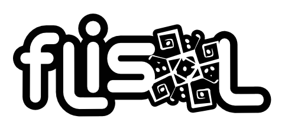

FliSol
El FLISoL se realiza desde el año 2005 y desde el 2008 se adoptó su realización el 4to Sábado de abril de cada año.
La asistencia es gratuita y su principal objetivo es promover el uso del software libre, dando a conocer al
público en general su filosofía, alcances, avances y desarrollo.
Tenemos un canal de telegram donde los asistentes al evento recibirán información actualizada
GRUPO DE TELEGRAM PARA ASISTENTES.
